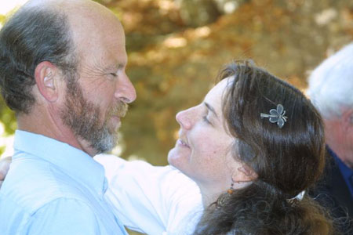

|  |
To our best memory, there will be conjuctions at various dates.
But we can't remember when.
We're distracted.
Our own conjunction slipped in there somewhere and confused things.
As the usual Shallow Sky and Mooning column deadlines were looming, so was the date of our wedding.
Yup, Akkana "Shallowsky" Peck and Dave "Mooning" North got married October 7, and now it's the 10th and we're really behind, and just seem to be too busy with one thing or another to figure out all those dates and schedules we normally stuff into our columns.
We're sure you understand.
So this month, we're just submitting this one combined column, celebrating everything.
There is the stuff of stars in what we're doing, in more ways than one.
For example, today we took our 4Runner up the Gemini Bridges trail near Canyonlands park, just outside Moab, Utah. From there we drove to the top of Upheaval Dome and hiked out to the observation point at the south end, getting an incredible view inside probably the most amazing impact crater on earth, with the stupidest name.
As we drove back to Moab, watching Perseus rise behind the red cliffs, we saw an incredible slow-moving meteor break up into smaller pieces as it fell. Tomorrow, we plan to hike up from the river into Upheaval crater and get a close-up look at the central ring.
And really, considering the circumstances, we hope you take a little time this month to glance at the Moon, maybe take a look at Jupiter (Akkana's favorite planet) and Saturn, and look up a conjunction schedule or even just a Jovian moon transit.
Enjoy.
We will be!
Akkana & Dave